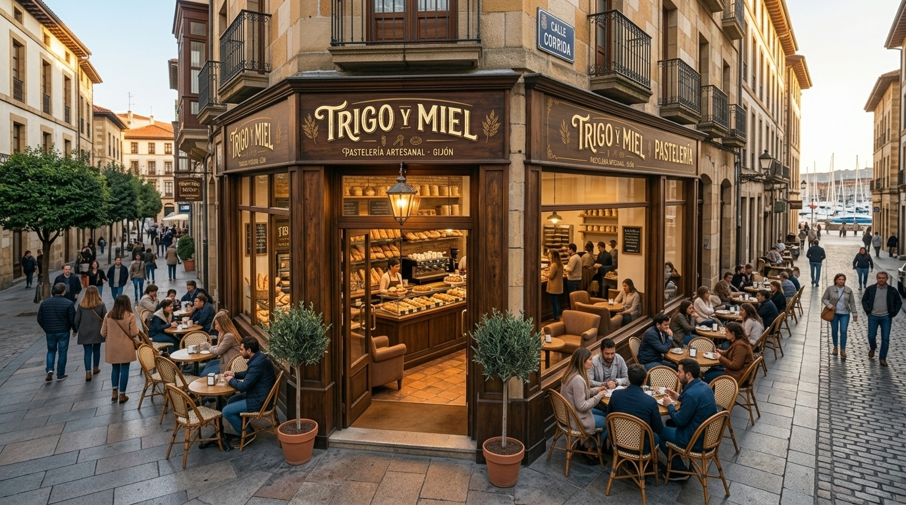

VISÍTANOS
Trigo y Miel
DIRECCIÓN: Calle corrida, 18 33206 Gijón
HORARIO: Lunes a Sábado, 7:30 - 14:30
TELÉFONO: 985 12 34 56

DIRECCIÓN: Calle corrida, 18 33206 Gijón
HORARIO: Lunes a Sábado, 7:30 - 14:30
TELÉFONO: 985 12 34 56

| Días | Horario |
|---|---|
| Lunes a Viernes | 7:30 - 14:30 y 17:00 - 20:00 |
| Sábados | 8:00 - 14:30 |
| Domingos | Cerrado |